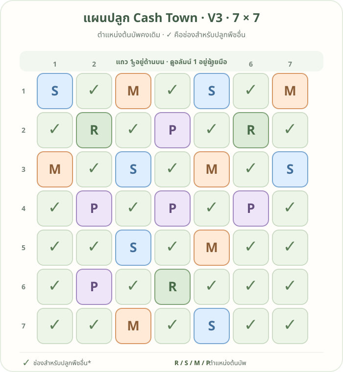

แผนปลูก Cash Town 7×7 · V3
คงตำแหน่งต้นบัพจาก V2 ไว้ เครื่องหมาย ✓ แสดงเฉพาะ 12 ช่องที่ได้รับบัพครบทั้ง 4 แถบ ช่องที่ไม่ติ๊กยังไม่ได้รับบัพครบทุกแถบ

อ่านรหัสต้นบัพ
พิกัดเขียนเป็น แถว, คอลัมน์ นับจากมุมซ้ายบน โดยเริ่มที่ 1
| รหัส | พืชบัพ | แถบที่ช่วย | ตำแหน่ง |
|---|---|---|---|
| R | ถั่วรันเนอร์ | ดิน | (2,2), (2,6), (6,4) |
| S | สตรอว์เบอร์รี่สวน | น้ำ | (1,1), (3,3), (1,5), (3,7), (5,3), (7,5) |
| M | ดาวเรือง | ป้องกัน | (1,3), (3,1), (1,7), (3,5), (5,5), (7,3) |
| P | โบราจ | เกสร | (2,4), (4,2), (4,4), (4,6), (6,2) |
✓ คือช่องที่ได้รับดิน น้ำ เกสร และป้องกันครบ เลือกพืชโดยคำนึงถึงคู่ปลูกของพืชนั้นด้วย ส่วนช่องว่างที่ไม่มีเครื่องหมายยังไม่ได้รับบัพครบทั้ง 4 แถบ